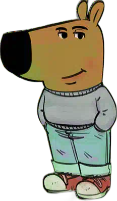
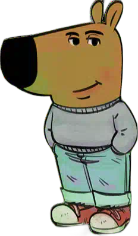

я просто чилловый парень
приветствую на шоу
“научи препода”
мне очень нравится этот мем, так что он будет тут
мне очень нравится этот мем, так что он будет тут
параллакс - это эффект трехмерного изображения,
когда задний фон прокручивается медленнее, чем передний. в целом, это нужно только для
эстетического удовольствия, определенной пользы в нем нет. однако благодаря нему сайт
запоминается, и пользователь чувствует заинтересованность.
создать его не так сложно, как кажется:
для этого в css нужно прописать глубину объекта с помощью transform: translateZ(кол-во px)
и perspective(кол-во px). нужно понимать, что, если подвинуть объект по оси z, он станет
меньше. для решения проблемы можно использовать scale(число), которое увеличит объект.
я просто чилловый парень
добавить видео в качестве фона на сайте легко: в html нужно прописать тег <video></video> с аттрибутами src=’ссылка’, type=’video/mp4’, а затем по желанию добавить autoplay, muted и loop. после этого нужно создать блок, благодаря которому можно затемнить видео. для этого в стилях блока нужно указать background-color: rgba(0, 0, 0, .6). и потом напишем текст. для наложения объектов друг на друга нужно прописать им одинаковые высоту и ширину, а также указать в стилях position: absolute, top: 0, left: 0. готово!
hover-эффект имеет огромное множество вариантов использования.
по факту это изменение объекта при наведении курсора: цвет,
проявление, увеличение,
поворот и т.д.
для того, чтобы у объекта была реакция на курсор, нужно прописать ему стиль при наведении
мышки название_объекта:hover {}. там и будут записаны все операции, например, color: white, transform:
rotate(180deg), scale(1.5), opacity: .5. для плавности перехода от исходного к измененному состоянию используют
transition: свойство длительность скорость_перехода задержка.
конечно, это далеко не все возможности веб-разработчиков, но я джун, который ниче не помнит)) да и в любом случае, я бы не успела рассказать что-либо сложное из-за ограничений во времени и моих способностях в объяснениях. надеюсь, вам было интересно и понятно, и вы смогли подчерпнуть для себя что-то новое. спасибо за внимание, буду рада ответить на все вопросы!
не терпи, господь с тобой закончил